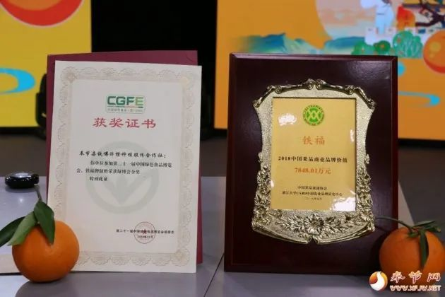

橙花香飘数十里，金果挂树笑春风。4月8日晚，奉节脐橙康乐镇专场
推介活动在县融媒体中心演播大厅举行，活动通过直播的形式，向
广大网友推介了康乐镇脐橙产业和乡村旅游。
直播推介现场 直播中，康乐镇镇长唐可人向广大网友介绍了康乐镇的
脐橙产业发展情况，现场带大家了解了脐橙品种、特性、规模等。直
播还邀请到“全国百强合作社”——铁佛脐橙种植专业合作社的理事长
马后明讲解了脐橙种植技术等情况。同时，直播还推介了康乐镇蛮王
寨、铁佛书院等景区。

唐可人直播推介脐橙 康乐镇镇长唐可人说：“参加这次推介活动，主
要是想宣传康乐的脐橙，推介康乐的脐橙，从而推动康乐脐橙产业更
快更好发展。”
康乐脐橙 脐橙是康乐镇的主导产业，现种植2.4万亩，其中晚熟脐橙1.
6万亩。值得一提的是，奉节脐橙研究所科研基地位于康乐镇内，主要
研究晚熟柑橘防冬季落果、防果实枯水、平衡配方施肥、病虫害绿色防
控、省力化栽培、果园机械、中熟脐橙留树保鲜、冷藏加工等研究工作
先后荣获重庆市政府科技进步一等奖、重庆市政府科技进步二等奖、奉
节县政府科技进步特等奖殊荣。

荣誉证书 康乐镇镇长唐可人表示，下一步，康乐镇将借助晚熟脐橙基
地，推动脐橙产业“接二连三”，打造种植、洗选、加工、销售、采摘体
验于一体的全产业链，让脐橙产业真正成为康乐的致富产业、甜蜜产业。 |